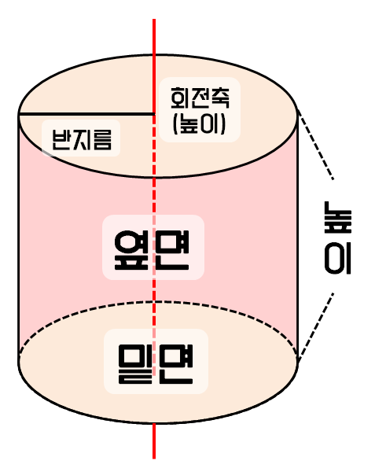
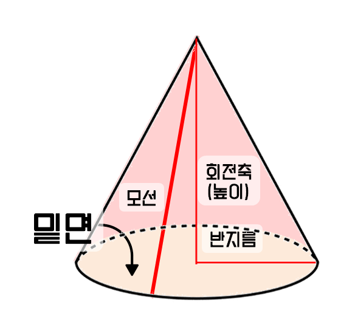
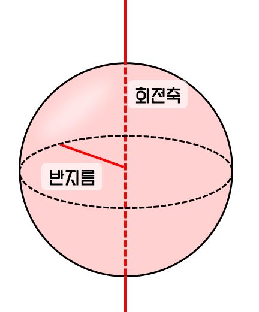

회전체
회전체
회전체란 어떤 도형을 회전축을 중심으로 회전시켰을 때 만들어지는 입체도형을 말한다. 대표적으로 원기둥, 원뿔, 구가 있다.
원기둥
직사각형을 회전축을 중심으로 회전시켰을 때 만들어지는 입체도형이다. 원 모양인 밑면이 2개, 부채꼴 모양인 옆면이 1개가 있다.

원뿔
직각삼각형을 회전축을 중심으로 회전시켰을 때 만들어지는 입체도형이다. 원 모양인 밑면이 1개, 부채꼴 모양인 옆면이 1개가 있다.

구
반원을 회전축을 중심으로 회전시켰을 때 만들어지는 입체도형이다. 밑면과 옆면이 없고, 전개도를 만드는 게 불가능하다.

회전체의 겉넓이와 부피
원기둥
원기둥에는 원으로 된 밑면 2개, 직사각형 옆면 1개가 있다. 따라서 겉넓이는 밑면의 넓이인 πr2과 옆면의 넓이인 2πr×높이이고, 따라서 밑면의 넓이인 2πr과 높이를 곱하면 된다.
원뿔
원뿔에는 원으로 된 밑면 2개, 호의 길이가 원의 넓이인 부채꼴 1개가 있다. 따라서 겉넓이는 πrl이고, 부피는 원기둥의 1/3이다. 따라서 πr2×높이/3이다.
구
구의 겉넓이는 반지름의 길이가 2배인 원의 넓이와 같다. 따라서 겉넓이는 2πr2이고, 넓이는 반지름이 같은 원기둥의 넓이의 3/4이므로 πr2×높이/3×3/4